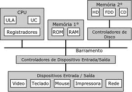
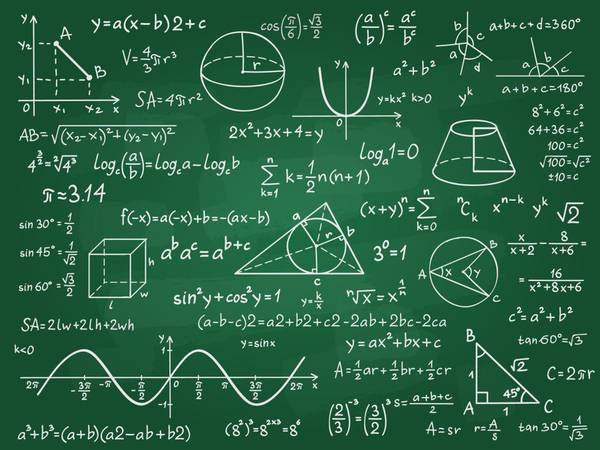
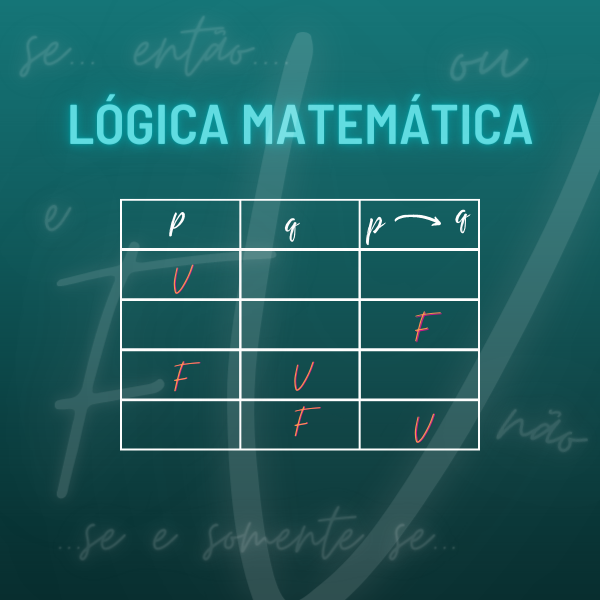
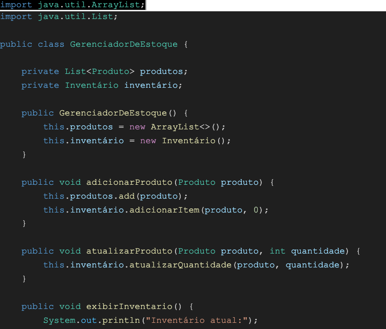
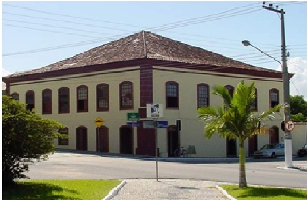

Semestre 1 - concluído

ORGANIZAÇÃO DE COMPUTADORES
Professor Cleber Jorge Amaral

FUNDAMENTOS DA MATEMÁTICA
Professora Jadina Amaro
Professora Elenira Oliveira Vilela
PENSAMENTO COMPUTACIONAL E ALGORITMOS
Professor Adriano Luiz de Souza Lima
INTRODUÇÃO À COMPUTAÇÃO
Professor Diego da Silva de Medeiros

LÓGICA MATEMÁTICA
Professor Volnei Velleda Rodrigues
INGLÊS INSTRUMENTAL I
Professor Bruno de Azevedo
Semestre 2 - em andamento

PROGRAMAÇÃO ORIENTADA A OBJETOS
Professor Emerson Ribeiro de Mello

PROGRAMAÇÃO FRONTEND I
Professor Sérgio Maurício Prolo Santos Júnior
Professora Ana Luiza Scharf
REDES DE COMPUTADORES
Professor Odilson Tadeu Valle
FUNDAMENTOS DE PROBABILIDADE E ESTATÍSTICA
Professor Fábio Alexandre de Souza
COMUNICAÇÃO E EXPRESSÃO
Professor Kayron Campos Bevilaqua

ATIVIDADES DE EXTENSÃO I
Professor Saul Silva Caetano
Professor Eraldo Silveira e Silva
Professor Volmir Von Dentz